Krak des Chevaliers: The Best-Preserved Crusader Castle
Krak Des ChevaliersCrac Des ChevaliersKrak Des ChevalierCrusader CastleCrusader CastlesKnights Hospitaller
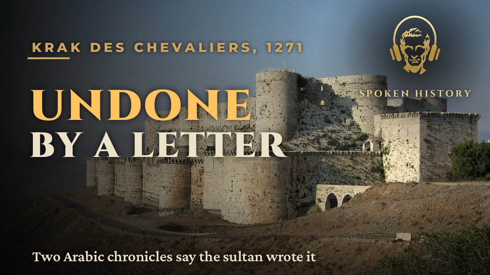
In April 1271, the knights holding one of the most powerful fortresses in the Christian East gave it up because of a letter. And the letter, say two Arabic chronicles, was a fake. It ordered them to surrender. It claimed to come from their own side, in Tripoli. Whose name was on it, and whether it happened at all, is still argued. The castle is Krak des Chevaliers, in Syria.
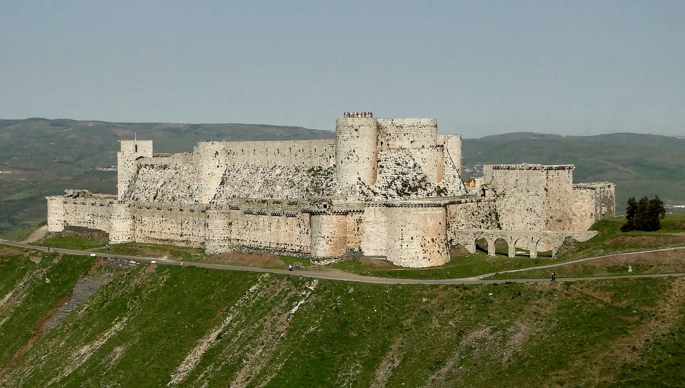
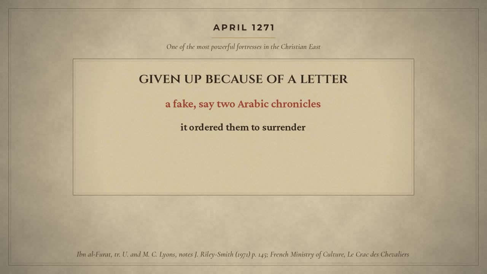
UNESCO's listing says that, in the history of architecture, it is taken as the best preserved example of the castles of the crusader period. Its own summary is more careful: among the best preserved. Today: how it was built, and how it fell.
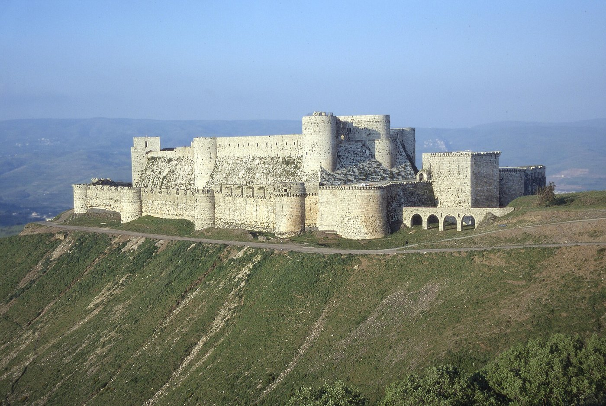
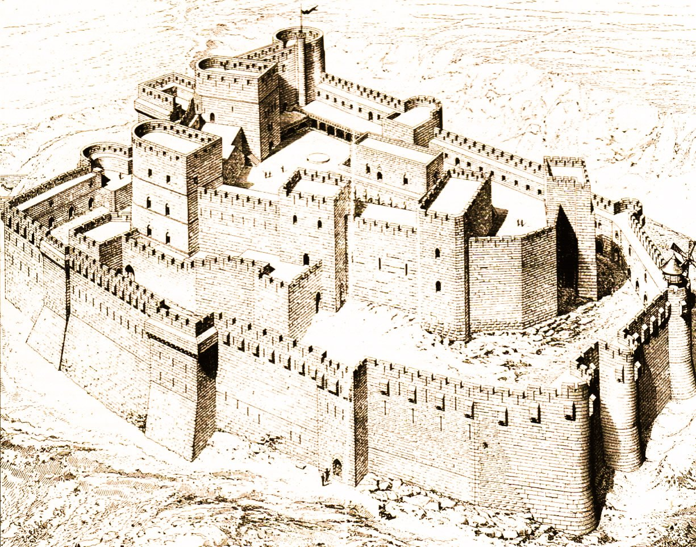
The fortress of the Kurds
Before the knights, there were Kurds. Around 1030, the emir of Homs put Kurdish soldiers in a fort on this hill. So its Arabic name became Hisn al-Akrad: the fortress of the Kurds. It guards the gap in the mountains between the coast and the cities of Homs and Hama. Crusaders took it around 1110. In the 1140s, the Count of Tripoli handed it to the Hospitallers, an order of monks who fought.
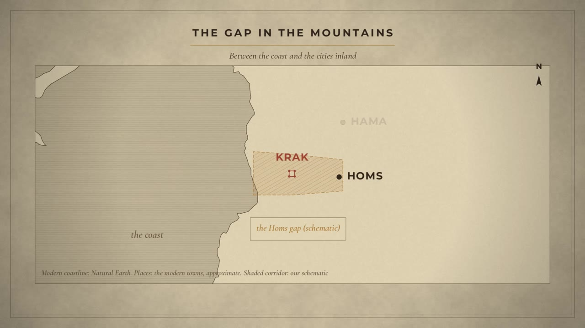
Did you know? The chronicler Ibn al-Athir said of the master of Krak: "It is like a bone stuck in the throat of the Muslims" (as quoted by the French Ministry of Culture, Le Crac des Chevaliers, historical and geographical context).
Earthquakes and rebuilding
Up to 1160, says the French Ministry of Culture, the region was shaken by five years of destructive earthquakes. The oldest Hospitaller walls probably date from after that: one ring of towers around a courtyard, with long vaulted halls inside. In 1188, Saladin came, looked, and moved on. He realised, writes the historian Jonathan Riley-Smith, that he did not have the force to take it. In 1202, the earthquakes returned, and the knights rebuilt on a grander scale. To the south, three round towers joined into one great keep, more than four levels high. Around its foot, an enormous sloping wall of stone, a talus, with a gallery and arrow slits hidden inside it. And over the new gate, two carved lions, asleep.
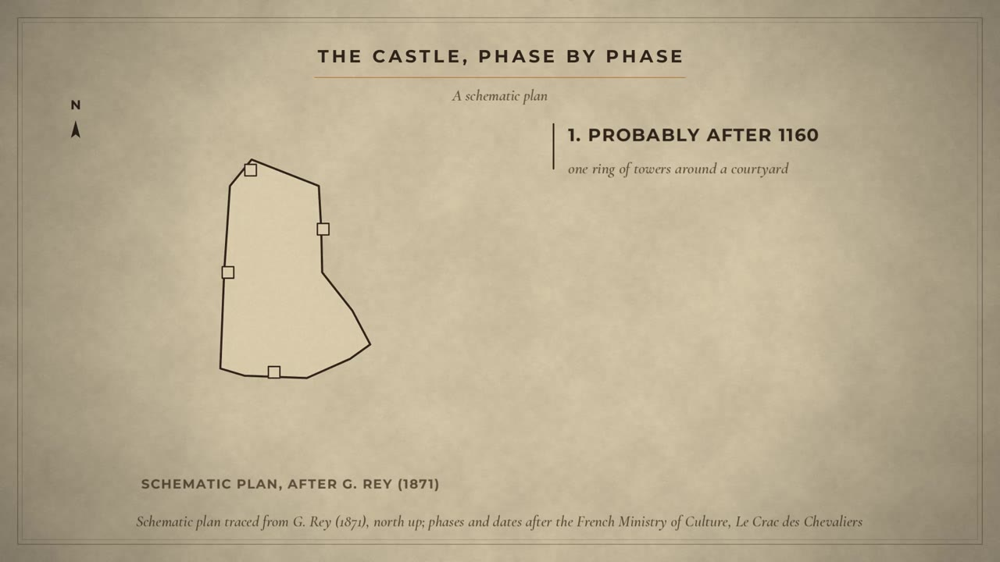
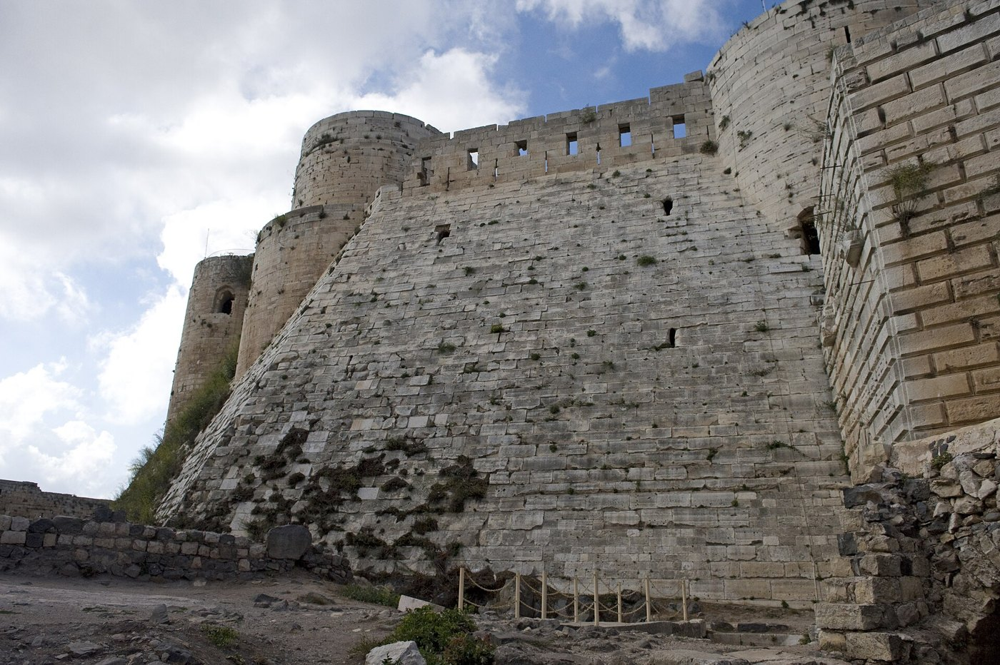
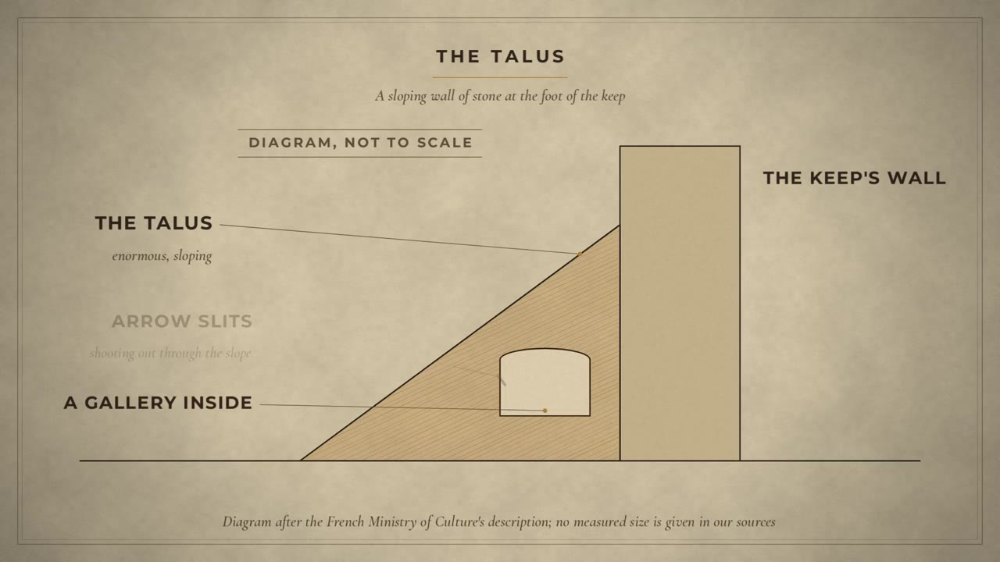
Two rings of walls
Around the middle of the 1200s came the last great phase: a second ring of walls, all the way around. The outer wall is low. The inner wall stands higher, and commands it. Two rings, one inside the other: a concentric castle, 300 metres at its longest.
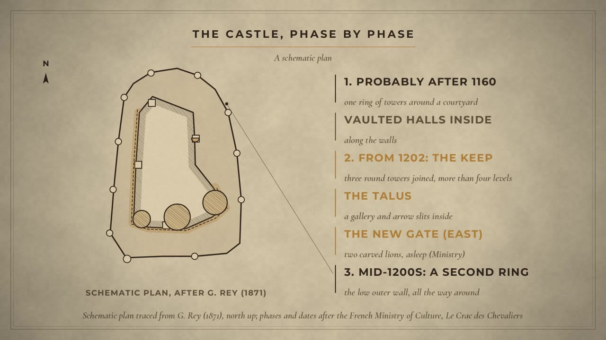
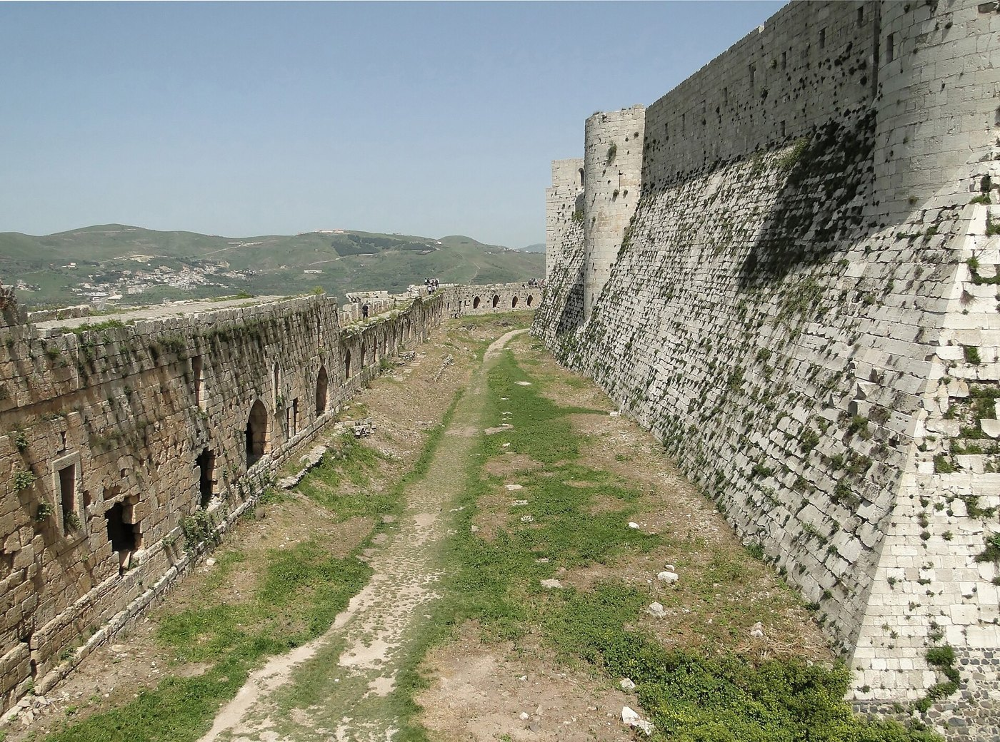
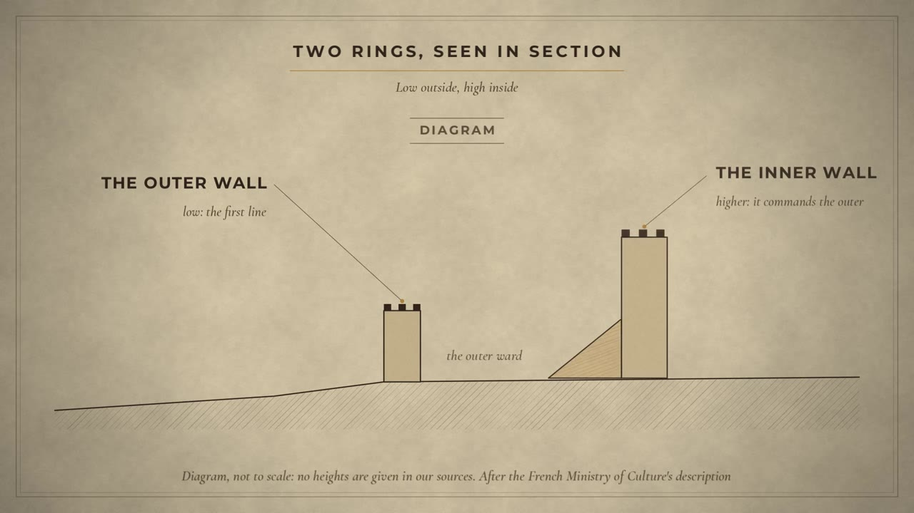
A note on the plan: the French Ministry of Culture points out that a double ring of walls was nothing new here; it had been well established in the region since the Byzantine period.
Who lived inside
Who lived in all this? In 1211, a German pilgrim, Wilbrand of Oldenburg, rode past. He called it a very great and very strong castle. He admits he never saw it himself. But in peacetime, he writes, 2,000 fighting men guard it. And the Hospitallers, he adds, swear to that under a great oath. The knights themselves were far fewer. At the core of the garrison were about sixty brother knights, each with a sergeant at arms.
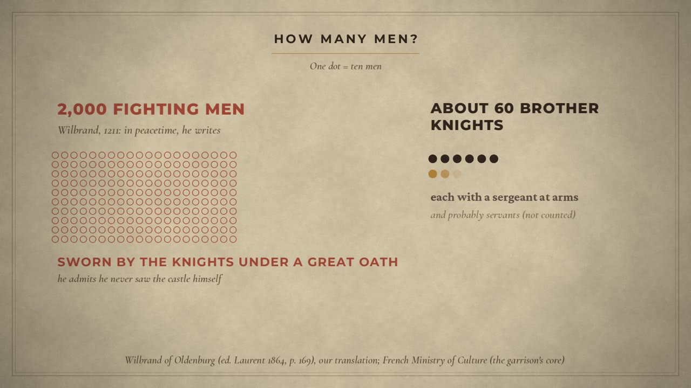
Did you know? By the order's rule, each knight had three mounts and each sergeant at arms two, so some sixty knights meant a theoretical three hundred horses. The stables at Krak are 60 metres long, yet, says the French Ministry of Culture, they could not hold 300 horses at once: the dignitaries' mounts were no doubt stabled in the upper castle, and others were probably out in use or left to graze.
A verse against pride
Around the middle of the century, the knights built a great hall, 27 metres long, in the Gothic style of the lands around Paris. On a pillar of its porch, someone carved a verse in Latin. “Have riches, have wisdom, and beauty too. But pride alone, if it comes along, stains everything.” (our translation) On the pillar opposite: this work was done in Brother Jorgi's time. Brother Jorgi left no other trace in the records.
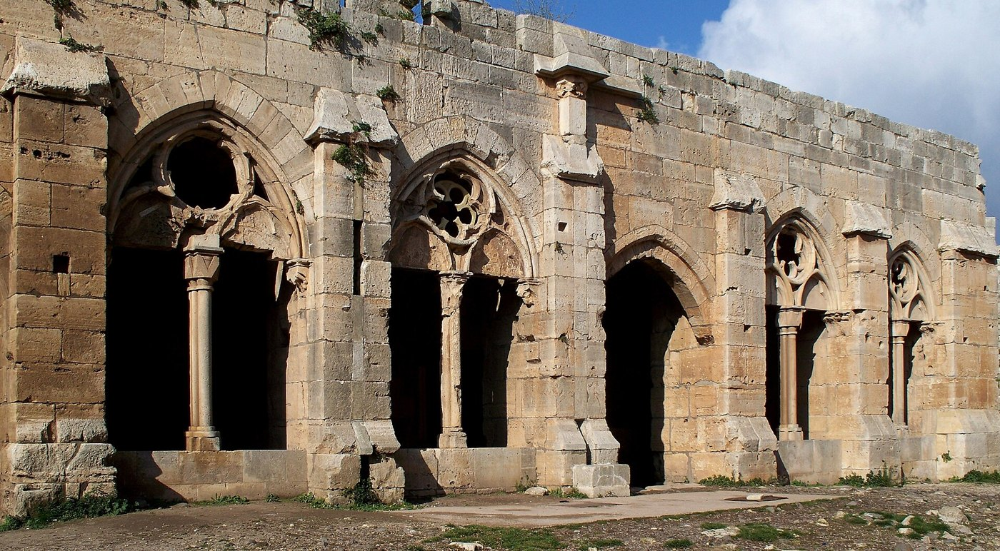
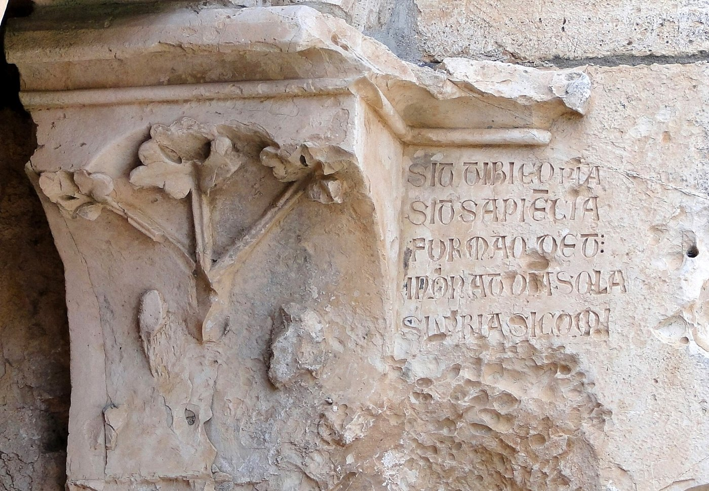
Did you know? The chapel kept the lances, shields and harness of fallen knights. Jean de Joinville, who went to the Holy Land with Saint Louis, came to the chapel of Krak to recover the shield of his uncle Geoffrey (French Ministry of Culture, Le Crac des Chevaliers, the chapels).
1270: forty horsemen
In the year he took Antioch, the Mamluk sultan Baybars rode past Krak. The brothers sent a message: please keep away, we have Franks from the West with us. Early in 1270, says the Egyptian historian Ibn al-Furat, Baybars came back, with no armour, and climbed the hill with no more than forty horsemen. Men in armour came out. He charged them, went up to their trenches, and called out, unrecognised. “Tell the messenger … to let the western Franks come out, for we are no more than forty horsemen, wearing (only) white gowns.” Then his army's horses grazed the castle's meadows and crops. Its only food came from those crops, writes Ibn al-Furat, and this was one of the reasons it fell.
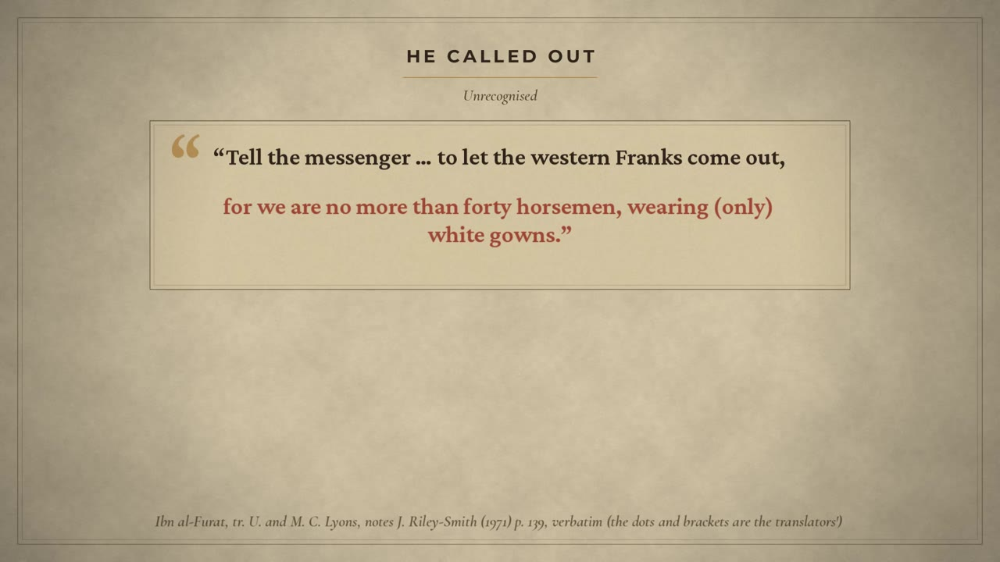
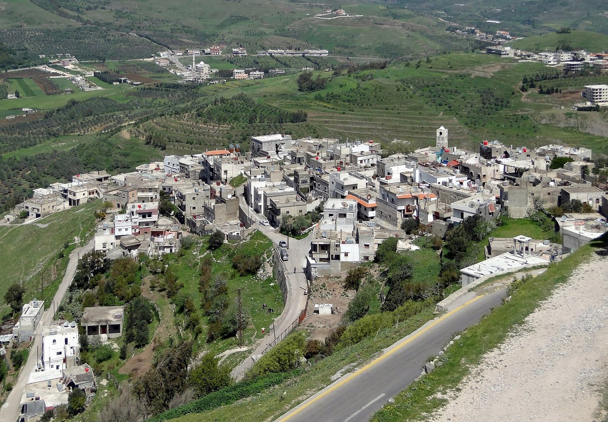
The siege of 1271
In February 1271, he came back with an army. His men took the town below the walls, and set up mangonels, stone throwers like those in our trebuchet episode. Then the miners went to work: a corps from Aleppo, digging under the towers. On 30 March, a tower came down. The attackers poured through the breach into the outer ward. The French Ministry of Culture says Hospitallers caught outside the inner castle were killed, and the peasants set free to farm the land. Ibn al-Furat says only that the sultan let a number of Franks and Christians go. The mangonels were moved into the outer ward, and turned on the inner castle.
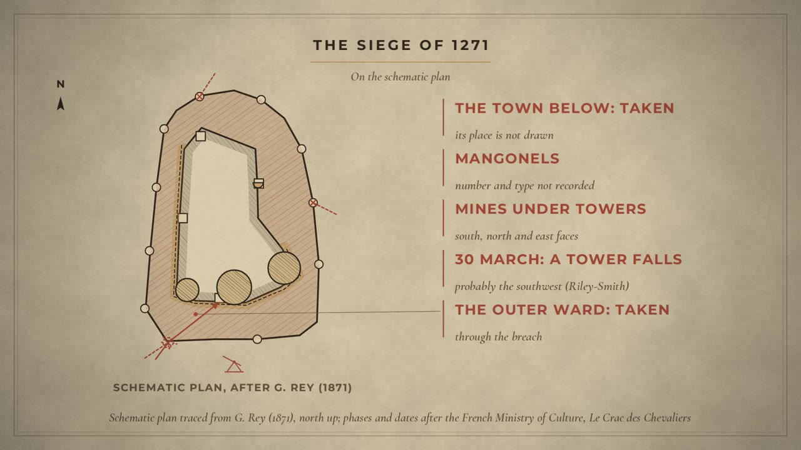
The letter
And then, says Ibn al-Furat, the sultan wrote letters to the men in the inner castle. They claimed to come from the Frankish leader in Tripoli, and they ordered the garrison to surrender. The garrison asked for a safe conduct, to go to their own lands. It was granted. On 8 April 1271, they marched out. Then Baybars wrote to their master, Hugh Revel. “You fortified it, built it up and adorned it, but you would have been more fortunate had you abandoned it.”

Was the letter real?
So was the letter real? There are three problems. First, whose name was on it? Ibn al-Furat says only: the Frankish leader in Tripoli. The historian Riley-Smith thought that meant the Hospitaller commander there. The French Ministry says the Count of Tripoli. Other modern accounts say the order's Grand Master. Second, who tells the story? Ibn al-Furat was born more than sixty years after the siege. Riley-Smith notes the letter in one other Arabic history, al-Nuwayri's, but not in three others. Third, a chronicle from the Christian side, the Deeds of the Cypriots, says only that the sultan took the castle on terms, their lives spared. And twelve years later, the Hospitallers made a new rule. A brother who handed a castle to the Saracens without his superior's permission would lose his place in the order, for ever. Riley-Smith suggests that, perhaps, the doubtful surrender of Krak was the reason. A forged letter, or a surrender on terms. We do not know which is closer to the truth. It could be both.
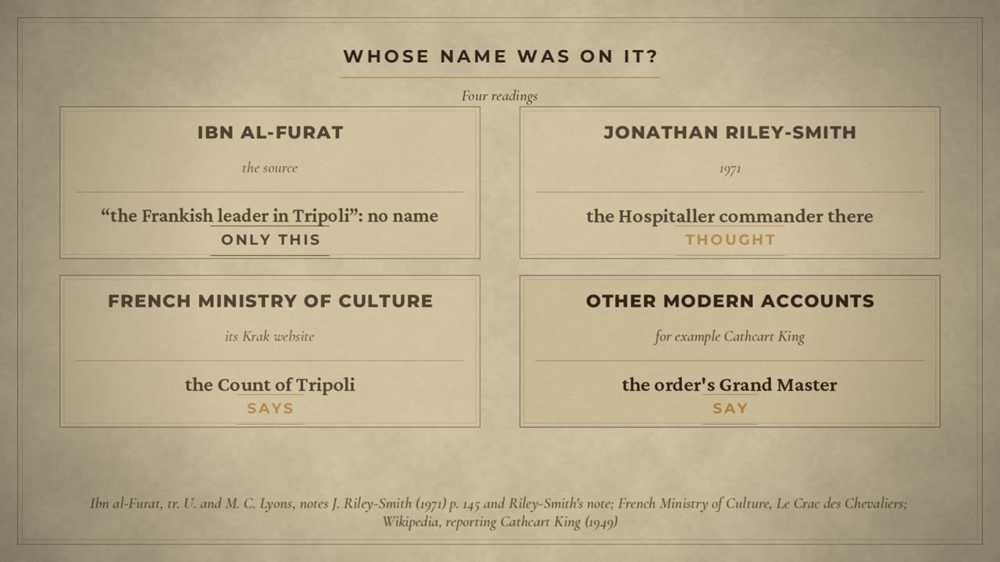
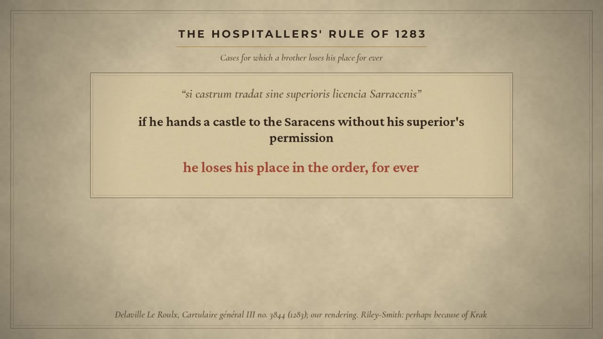
The castle records its capture
And the castle itself still records its capture. Where the miners brought down the southwest tower, a new round tower rose, with an inscription dated 1271, to the glory of Baybars. It is framed by two carved lions: his emblem. The south face, worst hit by the stones, was refaced from end to end. In 1285, a later sultan, Qalawun, added a great square tower on the south side, with his inscription along its whole face. The chapel became a mosque. Sleeping lions of the knights on one gate. Lions of the sultan on the new tower.
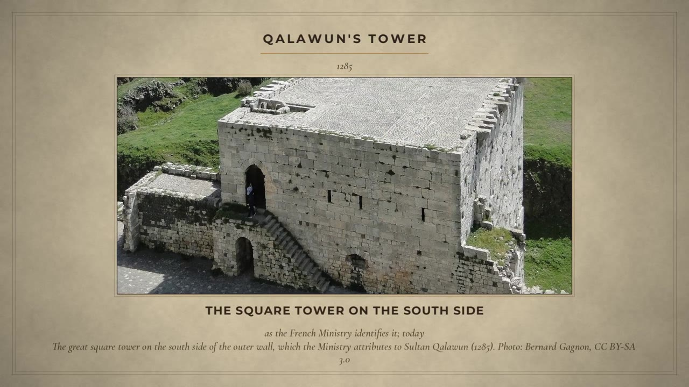
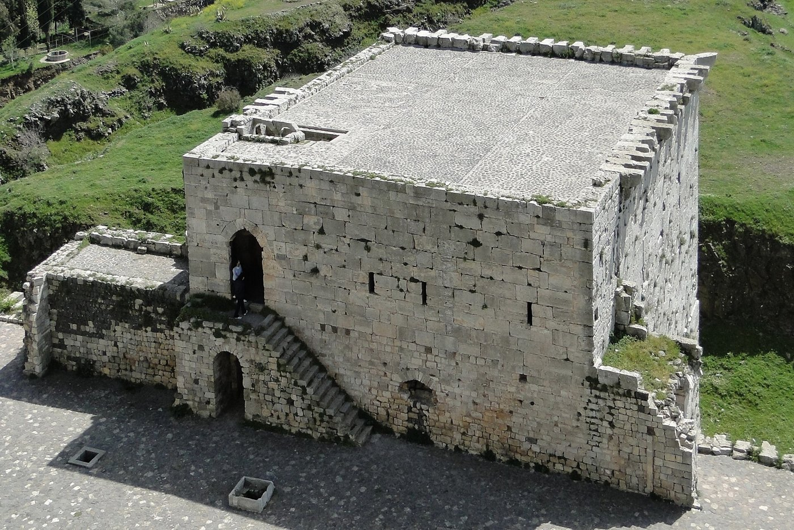
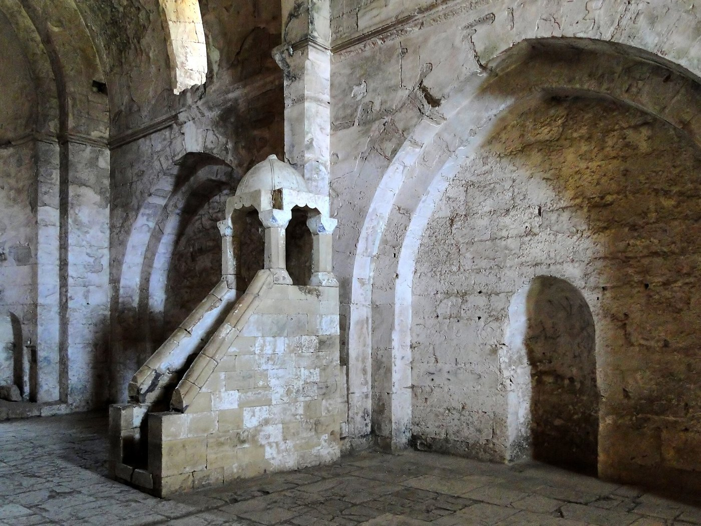
Edward at Acre
One month after Krak fell, on 9 May 1271, an English prince landed at Acre: the Lord Edward, the future Edward I. Back home, he would build concentric castles in Wales, like Beaumaris, from our castle building episode. So did castles like Krak inspire them? UNESCO writes that the castle building they document had an impact both in the East and in the West. But in 1910, T. E. Lawrence, then an Oxford student, argued the opposite, at least for the twelfth century. His summing up: the crusading architects were for many years copyists of the Western builders. Nothing we read puts Edward at Krak. We do not know what, if anything, he took home.
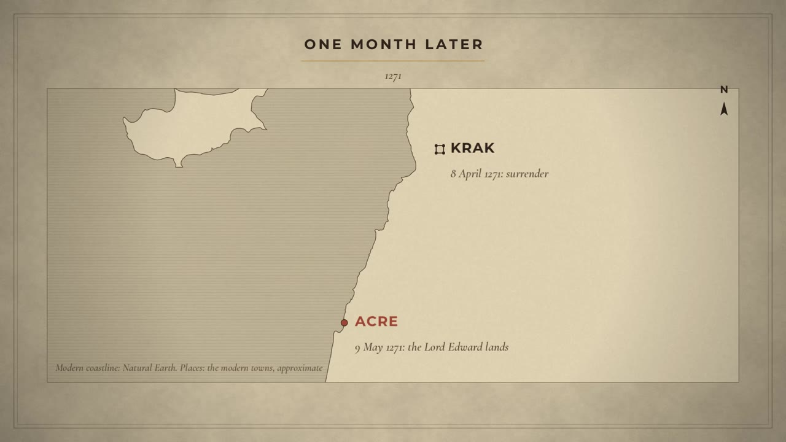

What we really have
In the same thesis, Lawrence called Krak perhaps the best preserved and most wholly admirable castle in the world. When French archaeologists came in the 1920s, a village of some 500 people stood inside the walls. In 1933, France, then ruling Syria, bought the castle for one million francs, and the money went to the villagers who were turned out of their homes. Since 2013, during the war in Syria, UNESCO has listed it as World Heritage in Danger.
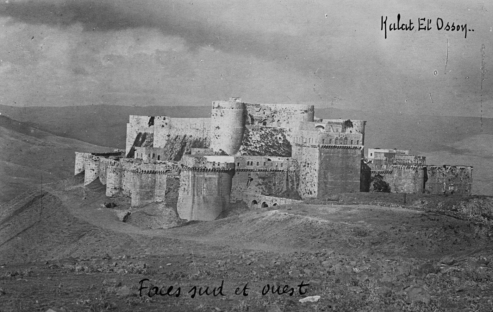
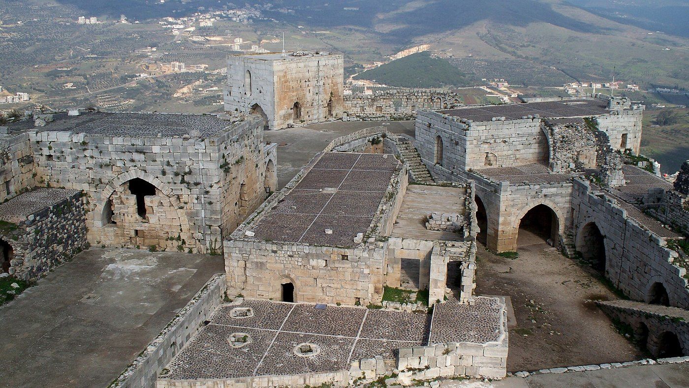
Verdict
So how did Krak des Chevaliers fall? Not to one blow. Grazed fields first, then mines and stones. And at the end, if those chronicles are right, a piece of paper.
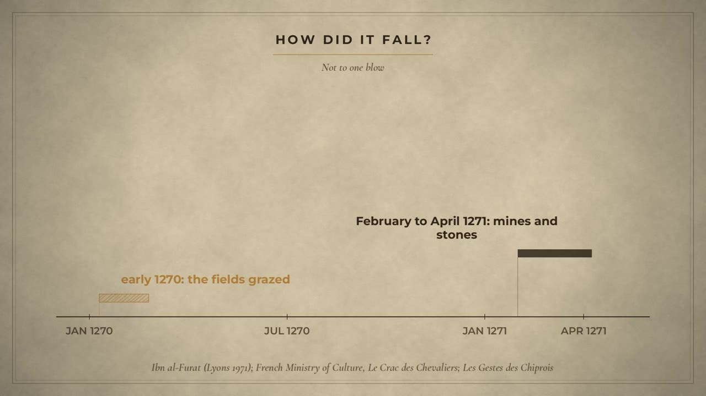
Over to you
Do you believe the sultan's forged letter, or the Christian chronicle's surrender on terms? Or could both be true? The forty horsemen in white gowns, the verse against pride, or the village that lived inside the walls: which detail stays with you?
Prefer to watch? The video on YouTube covers the same story with the full animations. Jump to a part:
- 0:00 April 1271: a letter
- 0:53 The fortress of the Kurds
- 1:20 Earthquakes and rebuilding
- 2:12 Two rings of walls
- 2:32 Who lived inside
- 3:03 A verse against pride
- 3:37 1270: forty horsemen
- 4:23 The siege of 1271
- 5:06 The letter
- 5:38 Was the letter real?
- 6:50 The castle records its capture
- 7:28 Edward at Acre
- 8:17 What we really have
- 8:48 Verdict
- 9:17 The website
Quick answers
Is Krak des Chevaliers the best preserved crusader castle?
UNESCO's listing says that, in the history of architecture, it is taken as the best preserved example of the castles of the crusader period. Its own summary is more careful: among the best preserved. In 1910 T. E. Lawrence called Krak perhaps the best preserved and most wholly admirable castle in the world. Since 2013, during the war in Syria, UNESCO has listed it as World Heritage in Danger.
Who built Krak des Chevaliers?
Around 1030 the emir of Homs put Kurdish soldiers in a fort on the hill, so its Arabic name became Hisn al-Akrad, the fortress of the Kurds. Crusaders took it around 1110, and in the 1140s the Count of Tripoli handed it to the Hospitallers. Their oldest walls probably date from after the earthquakes that shook the region up to 1160. After the earthquakes of 1202 they rebuilt on a grander scale: a keep of three round towers joined into one, on an enormous sloping talus. Around the middle of the 1200s came a second ring of walls, making it a concentric castle 300 metres at its longest. After 1271 the Mamluk sultans Baybars and Qalawun added towers of their own.
How did Krak des Chevaliers fall?
Not to one blow. Early in 1270 the horses of the sultan Baybars' army grazed the castle's meadows and crops; its only food came from those crops, writes Ibn al-Furat, and this was one of the reasons it fell. In February 1271 Baybars came back with an army, took the town below the walls and set up mangonels, while miners from Aleppo dug under the towers. On 30 March a tower came down and the attackers poured into the outer ward. Then, says Ibn al-Furat, the sultan wrote letters to the men in the inner castle, claiming to come from the Frankish leader in Tripoli and ordering them to surrender. They asked for a safe conduct, it was granted, and on 8 April 1271 they marched out.
Was the letter that made Krak des Chevaliers surrender a fake?
We do not know. Ibn al-Furat, who was born more than sixty years after the siege, says the sultan wrote it; the historian Jonathan Riley-Smith notes the letter in one other Arabic history, al-Nuwayri's, but not in three others. Even the name on it is argued: Riley-Smith thought it meant the Hospitaller commander in Tripoli, the French Ministry of Culture says the Count of Tripoli, other modern accounts say the order's Grand Master. A Christian chronicle, the Deeds of the Cypriots, says only that the sultan took the castle on terms, their lives spared. Twelve years later the Hospitallers made a rule against handing a castle to the Saracens without a superior's permission, perhaps, Riley-Smith suggests, because of Krak. It could be both.
How many men defended Krak des Chevaliers?
The German pilgrim Wilbrand of Oldenburg, who rode past in 1211, wrote that in peacetime two thousand fighting men guarded it, and that the Hospitallers swore to that under a great oath; but he admits he never saw the castle himself. The knights themselves were far fewer: at the core of the garrison were about sixty brother knights, each with a sergeant at arms.
Where it happened
- Krak des Chevaliers (A.D. 1271): Hisn al-Akrad, the fortress of the Kurds; held by the Hospitallers from the 1140s; besieged by Baybars from February 1271; the garrison marched out on 8 April 1271.
- Homs (A.D. 1030): Around 1030 the emir of Homs put Kurdish soldiers in a fort on the hill. The castle guards the gap between the coast and Homs and Hama.
- Hama (A.D. 1270): One of the two inland cities whose road to the coast the castle guarded (French Ministry of Culture).
- Tripoli (A.D. 1271): Seat of the Count of Tripoli, who handed the castle to the Hospitallers in the 1140s; the letters of 1271 claimed to come from the Frankish leader there (Ibn al-Furat).
- Aleppo (A.D. 1271): A corps of miners from Aleppo dug under the towers in the siege of 1271.
- Acre (A.D. 1271): The Lord Edward, the future Edward I, landed here on 9 May 1271, one month after Krak fell (Deeds of the Cypriots).
- Beaumaris Castle (A.D. 1295): One of the concentric castles Edward I built in Wales. Nothing we read puts Edward at Krak.
Sources
Ancient writers and modern work
Everything below was opened and read on 2026-11-19 unless stated. Verbatim excerpts are in `research/excerpts.md` (sections X1 to X9); the French
Ministry of Culture pages are saved as text in `research/ministry/`. Tags used in `claims.md`: A medieval testimony, E standing building, inscription or
archive evidence, M modern scholarship, D disputed (hedged in the narration), I our illustration or framing. Translations marked "our translation" are
ours and are labelled so on screen where quoted.
The building, the garrison and the Mamluk work (backbone)
Pages read in full (saved in `research/ministry/`): about-castle; historical-and-geographical-context; transfer-krak-hospitallers;
first-hospitaller-castle-12th-century; strengthening-fortifications-13th-century; final-construction-phase; great-gothic-hall;
chapels-decorated-frescoes; baybars-siege-1271; baybars-alterations; mamluk-refortification; sultan-qalawuns-tower; krak-des-chevaliers-under-mamluks;
residential-and-religious-alterations; hammam; acquisition-and-management-castle; pioneers-0; french-research. Used for: the Kurdish garrison of 1031
and the name; the 1142 grant; the earthquakes up to 1160 and of 1202 to 1203; the plan of the first castle; the keep of three round towers and the talus
with its gallery; the sleeping lions over the gate; the mid-thirteenth-century outer enceinte; size (300 m by 140 m); the garrison core of some sixty
brother knights; the great hall (27 m, Rayonnant Gothic) and its two inscriptions ("Sit tibi copia ..." and Brother Jorgi); the 1271 siege (miners from
Aleppo, the tower that fell on 30 March, mangonels in the lower ward, the forged letter "signed by the Count of Tripoli", aman on 8 April); the refacing
of the south face; Baybars' round tower of 1271 with its lions; Qalawun's tower of 1285; the chapel turned mosque; the village of some 500 people and
the purchase by France in 1933 for one million francs; the danger list since 2013. A heritage body's synthesis; its own footnotes are not given online,
so its statements are attributed on air where they carry a number or a judgement ("says the French Ministry of Culture").
List of World Heritage in Danger since 2013). whc.unesco.org returned 403 to our fetch; read in full in the Internet Archive copy
http://web.archive.org/web/20241226023759/https://whc.unesco.org/en/list/1229 . Used: criterion (iv), verbatim, "taken as the best preserved example of
the castles of the Crusader period" (the basis of the title); the brief description's "ranks among the best-preserved examples" (said on air as the
caveat); criterion (ii), "had an impact both in the East and in the West"; the dates of inscription and of the danger listing. The nomination file
(uploads/nominations/1229.pdf) was NOT opened.
The siege of 1271 and the forged letter
Tarikh al-Duwal wa'l-Muluk of Ibn al-Furat*, 2 vols (Cambridge 1971). Internet Archive full texts:
https://archive.org/details/lyons-riley-smith-ayyubids-mamlukes-and-crusaders-vol-1 and
https://archive.org/details/lyons-riley-smith-ayyubids-mamlukes-and-crusaders-vol-2 . The backbone for the siege. Used: vol. 1 introduction (Ibn
al-Furat 1334 to 1405; his use of Ibn Shaddad; al-Nuwayri died 1332); vol. 2 pp. 139 to 140 (Baybars' ride to the castle in 1270 with forty horsemen
in white gowns; the grazed crops as "one of the reasons why it was captured"); pp. 144 to 146 (the Kurds of 1030 to 1031 and the old name Hisn al-Safh;
Tancred, 1110; not among Saladin's conquests; the siege dates; the breach of 30 March; the letters "purporting to come from the Frankish leader in
Tripoli"; the safe-conduct; the surrender; Baybars' letter to Hugh Revel); Riley-Smith's notes pp. 238 to 240 (Saladin in 1188; Christian dating of
the siege; Ibn Shaddad's dates; the letter "presumably" from the Hospitaller Commander of Tripoli; the false letter also in al-Nuwayri but not in
Abu'l-Fida, al-Ayni or al-Maqrizi; "a fiance"; the 1283 statute "perhaps" prompted by Krak; a garrison of sixty about 1255). An English translation,
not the Arabic text; Ibn al-Furat wrote more than a century after the siege, which the narration says.
https://archive.org/details/histoiredessulta01maqr . Read to check Riley-Smith: the siege and the capitulation are there, the forged letter is not.
from 18 February 1271; the castle taken "a fiance" on 8 April, "sauve lor vies"; the Lord Edward at Acre on 9 May 1271. Old French; our translation.
27 September 1283), pp. 450 to 453, https://archive.org/details/cgoh-3 . Used: section 11, a brother who hands over a castle to the Saracens without
his superior's permission loses the fellowship of the house for ever. Latin; our translation.
Checked only: the surviving part begins with the year after the siege. His account of the siege (in *al-A'laq al-Khatira*, French translation in
Deschamps 1934, p. 133) was NOT read; his dates are known to us only from Riley-Smith's notes.
behind a captcha); al-Nuwayri, *Nihayat al-Arab* (not found in an open text); Abu'l-Fida and al-Ayni. What we say of King comes from Wikipedia's report
(see below) and is used only for "other modern accounts say the order's Grand Master".
Pilgrims, inscriptions and the influence question
ch. I.9, p. 169, https://archive.org/details/bub_gb_DdWR2iGtesMC . Used: "castrum ... maximum et fortissimum"; "cum ipsum non viderim"; "tempore pacis a
duobus milibus pugnatorum solet custodiri, quod hospitalarii sub magno asserunt iuramento"; the date (Acre 25 August 1211, Antioch by 22 November
1211, from the text and Laurent's notes). Latin; our translation. Laurent marks "hospitalariorum" in the first phrase as his conjecture, so the narration
does not lean on that word.
published 1936 as *Crusader Castles*), Oxford University Research Archive scans,
https://ora.ox.ac.uk/objects/uuid:83ada2c7-d81a-4235-876d-5a774e1414a1 (we ran OCR on the PDFs; the OCR is rough). Used: Crac "perhaps the best
preserved and most wholly admirable castle in the world"; the conclusion that "the Crusading architects were for many years copyists of the West"
(fact-checker 2026-11-20 read the page image, PDF r8336h236b p. 39 = typescript p. 66: the exact words are "the Crusading architects were for many years copyists of the Western builders", in quotation marks, margin note "c.p. Oman"). Lawrence's drawings and photographs are public
domain in the UK and EU (he died in 1935); not checked for US status.
(mangonels).
Used only to find sources (not cited for any fact on air)
translation. Used only to report that some modern accounts name the Hospitaller Grand Master (citing King 1949). Its "garrison of 2,000" (from Kennedy
1994, ultimately Wilbrand) is told on air from Wilbrand himself, with his own caveat. French Wikipedia (Templar Grand Master, citing Mesqui and Goepp)
not used.
Standard works NOT read (residual risk, L21)
Saladin is told from Riley-Smith's note.
are attributed to the French Ministry of Culture.
are not public domain in the EU (he died in 1974) and must not be used as images.
for the art director, to be labelled as nineteenth-century reconstructions.
Image credits
- Krak des Chevaliers, photographed in 2002: the outer ring, the inner castle and the keep above its sloping talus. Photo: Gianfranco Gazzetti, CC BY-SA 4.0
- Krak des Chevaliers today, the south and west sides from the southwest. Photo: Dosseman, CC BY-SA 4.0
- Krak des Chevaliers, Syria (2010). Photo: Bernard Gagnon, CC BY-SA 4.0
- Krak des Chevaliers, panorama (2005). Photo: Xvlun, CC BY-SA 2.5
- Krak des Chevaliers from the southwest, 2008. Photo: Vyacheslav Argenberg, CC BY 4.0
- A long vaulted hall inside the inner castle at Krak. Photo: Dosseman, CC BY-SA 4.0
- Krak des Chevaliers on its hill, seen from a distance (2023). Photo: Ondřej Havelka, CC BY-SA 4.0
- The south face of the inner castle: round towers of the keep above the sloping talus. Photo: Bernard Gagnon, CC BY-SA 3.0
- The great sloping talus at the foot of the keep, Krak des Chevaliers. Photo: Dosseman, CC BY-SA 4.0
- Between the two rings on the west side: the low outer wall (left) and the higher inner wall on its talus (right). Photo: Bernard Gagnon, CC BY-SA 3.0
- The upper court of the inner castle, Krak des Chevaliers. Photo: Bernard Gagnon, CC BY-SA 3.0
- Krak des Chevaliers above the hills and fields of the Homs region (2011). Photo: Ergo (Flickr); crop by Nev1, CC BY 2.0
- The courtyard of the inner castle with the Gothic hall and its porch (centre). Photo: Dosseman, CC BY-SA 4.0
- The hill of Krak des Chevaliers from the southwest. Photo: Dosseman, CC BY-SA 4.0
- The village of al-Husn and its fields at the foot of the castle today. Photo: Bernard Gagnon, CC BY-SA 3.0
- The outer ward on the south side, seen from the square south tower. Photo: Dosseman, CC BY-SA 4.0
- The south and west sides of Krak des Chevaliers today. Photo: Dosseman, CC BY-SA 4.0
- Krak des Chevaliers on its ridge, photographed in 2008. Photo: Vyacheslav Argenberg, CC BY 4.0
- The keep and talus of the south face, seen from the outer wall. Photo: Dosseman, CC BY-SA 4.0
- The crusader chapel, later a mosque: the stone minbar (pulpit) built inside it. Photo: Bernard Gagnon, CC BY-SA 3.0
- Beaumaris Castle, Anglesey, from the air (2023): a concentric castle begun for Edward I. Photo: Llywelyn2000, CC BY-SA 4.0
- Looking along the west side from the southwest inner tower: inner and outer walls. Photo: Vyacheslav Argenberg, CC BY 4.0
- The inner wall on the west side, standing over the outer ward. Photo: Bernard Gagnon, CC BY-SA 3.0
- Inside the former chapel, turned into a mosque. Photo: Dosseman, CC BY-SA 4.0
- Inside the walls today: the courts and roofs of the inner castle, cleared of houses. Photo: High Contrast, CC BY 3.0 de
- Animations, maps and diagrams: original work, Spoken History. Map data: Natural Earth, public domain.
- Music: Mendelssohn - String Quartet No. 6 in F minor, Op. 80 - III. Adagio (Musopen String Quartet): Felix Mendelssohn; released to the public domain by Musopen (PD-author on the Commons file page)
- Music: Brendan Kinsella - Mozart - Sonata No 13 In B Flat Major K333 - II Andante Cantabile: Wolfgang Amadeus Mozart; CC0 on the Commons file page
- Music: Gymnopedie No. 1.: Teknopazzo; CC0 on the Commons file page
- Music: Dvořák - String Quartet No. 12 in F major, Op. 96 'American' - II. Lento (Musopen String Quartet): Antonín Dvořák; released to the public domain by Musopen (PD-author on the Commons file page)
- Music: NYCP Tchaikovsky Andante cantabile: Pyotr Ilyich Tchaikovsky, performed by New York Classical Players; CC-BY (YouTube CC-BY), credit required
Transcript
Read the full narration
Krak des Chevaliers. Undone by a letter. In April 1271, the knights holding one of the most powerful fortresses in the Christian East gave it up because of a letter. And the letter, say two Arabic chronicles, was a fake. It ordered them to surrender. It claimed to come from their own side, in Tripoli. Whose name was on it, and whether it happened at all, is still argued. The castle is Krak des Chevaliers, in Syria. UNESCO's listing says that, in the history of architecture, it is taken as the best preserved example of the castles of the crusader period. Its own summary is more careful: among the best preserved. Today: how it was built, and how it fell. Before the knights, there were Kurds. Around 1030, the emir of Homs put Kurdish soldiers in a fort on this hill. So its Arabic name became Hisn al-Akrad: the fortress of the Kurds. It guards the gap in the mountains between the coast and the cities of Homs and Hama. Crusaders took it around 1110. In the 1140s, the Count of Tripoli handed it to the Hospitallers, an order of monks who fought. Up to 1160, says the French Ministry of Culture, the region was shaken by five years of destructive earthquakes. The oldest Hospitaller walls probably date from after that: one ring of towers around a courtyard, with long vaulted halls inside. In 1188, Saladin came, looked, and moved on. He realised, writes the historian Jonathan Riley-Smith, that he did not have the force to take it. In 1202, the earthquakes returned, and the knights rebuilt on a grander scale. To the south, three round towers joined into one great keep, more than four levels high. Around its foot, an enormous sloping wall of stone, a talus, with a gallery and arrow slits hidden inside it. And over the new gate, two carved lions, asleep. Around the middle of the 1200s came the last great phase: a second ring of walls, all the way around. The outer wall is low. The inner wall stands higher, and commands it. Two rings, one inside the other: a concentric castle, 300 metres at its longest. Who lived in all this? In 1211, a German pilgrim, Wilbrand of Oldenburg, rode past. He called it a very great and very strong castle. He admits he never saw it himself. But in peacetime, he writes, 2,000 fighting men guard it. And the Hospitallers, he adds, swear to that under a great oath. The knights themselves were far fewer. At the core of the garrison were about sixty brother knights, each with a sergeant at arms. Around the middle of the century, the knights built a great hall, 27 metres long, in the Gothic style of the lands around Paris. On a pillar of its porch, someone carved a verse in Latin. “Have riches, have wisdom, and beauty too. But pride alone, if it comes along, stains everything.” (our translation) On the pillar opposite: this work was done in Brother Jorgi's time. Brother Jorgi left no other trace in the records. If you are enjoying this type of content, please don't forget to subscribe. In the year he took Antioch, the Mamluk sultan Baybars rode past Krak. The brothers sent a message: please keep away, we have Franks from the West with us. Early in 1270, says the Egyptian historian Ibn al-Furat, Baybars came back, with no armour, and climbed the hill with no more than forty horsemen. Men in armour came out. He charged them, went up to their trenches, and called out, unrecognised. “Tell the messenger … to let the western Franks come out, for we are no more than forty horsemen, wearing (only) white gowns.” Then his army's horses grazed the castle's meadows and crops. Its only food came from those crops, writes Ibn al Furat, and this was one of the reasons it fell. In February 1271, he came back with an army. His men took the town below the walls, and set up mangonels, stone throwers like those in our trebuchet episode. Then the miners went to work: a corps from Aleppo, digging under the towers. On 30 March, a tower came down. The attackers poured through the breach into the outer ward. The French Ministry of Culture says Hospitallers caught outside the inner castle were killed, and the peasants set free to farm the land. Ibn al Furat says only that the sultan let a number of Franks and Christians go. The mangonels were moved into the outer ward, and turned on the inner castle. And then, says Ibn al Furat, the sultan wrote letters to the men in the inner castle. They claimed to come from the Frankish leader in Tripoli, and they ordered the garrison to surrender. The garrison asked for a safe conduct, to go to their own lands. It was granted. On 8 April 1271, they marched out. Then Baybars wrote to their master, Hugh Revel. “You fortified it, built it up and adorned it, but you would have been more fortunate had you abandoned it.” So was the letter real? There are three problems. First, whose name was on it? Ibn al Furat says only: the Frankish leader in Tripoli. The historian Riley-Smith thought that meant the Hospitaller commander there. The French Ministry says the Count of Tripoli. Other modern accounts say the order's Grand Master. Second, who tells the story? Ibn al Furat was born more than sixty years after the siege. Riley-Smith notes the letter in one other Arabic history, al-Nuwayri's, but not in three others. Third, a chronicle from the Christian side, the Deeds of the Cypriots, says only that the sultan took the castle on terms, their lives spared. And twelve years later, the Hospitallers made a new rule. A brother who handed a castle to the Saracens without his superior's permission would lose his place in the order, for ever. Riley-Smith suggests that, perhaps, the doubtful surrender of Krak was the reason. A forged letter, or a surrender on terms. We do not know which is closer to the truth. It could be both. And the castle itself still records its capture. Where the miners brought down the southwest tower, a new round tower rose, with an inscription dated 1271, to the glory of Baybars. It is framed by two carved lions: his emblem. The south face, worst hit by the stones, was refaced from end to end. In 1285, a later sultan, Qalawun, added a great square tower on the south side, with his inscription along its whole face. The chapel became a mosque. Sleeping lions of the knights on one gate. Lions of the sultan on the new tower. One month after Krak fell, on 9 May 1271, an English prince landed at Acre: the Lord Edward, the future Edward the First. Back home, he would build concentric castles in Wales, like Beaumaris, from our castle building episode. So did castles like Krak inspire them? UNESCO writes that the castle building they document had an impact both in the East and in the West. But in 1910, T. E. Lawrence, then an Oxford student, argued the opposite, at least for the twelfth century. His summing up: the crusading architects were for many years copyists of the Western builders. Nothing we read puts Edward at Krak. We do not know what, if anything, he took home. In the same thesis, Lawrence called Krak perhaps the best preserved and most wholly admirable castle in the world. When French archaeologists came in the 1920s, a village of some 500 people stood inside the walls. In 1933, France, then ruling Syria, bought the castle for one million francs, and the money went to the villagers who were turned out of their homes. Since 2013, during the war in Syria, UNESCO has listed it as World Heritage in Danger. So how did Krak des Chevaliers fall? Not to one blow. Grazed fields first, then mines and stones. And at the end, if those chronicles are right, a piece of paper. Two questions for you. Do you believe the forged letter, or the Christian chronicle's surrender on terms? And which detail stays with you: the forty horsemen in white gowns, the verse against pride, or the village inside the walls? Every episode has an article on spoken-history.chronas.org, with every source and every image credit. Open the map to see where each story happened, or drag the slider to pick a period. Pick any topic, and it leads you to every episode that covers it. The link is in the description. If you like history that shows you the sources, a like and a subscribe help me keep making it. And write me a comment. I read every one. Thanks for watching, and I'll see you in the next one. It's on your screen right now. Tap it, and I'll see you there.
All 16 topics
More episodes

How a Medieval Castle Was Built: "The Greatest Castle Never Built"
How a medieval castle was built, told through one castle's paperwork: Beaumaris on Anglesey, begun for Edward I in 1295 and never finished. The letter of 27 February 1296 to the Exchequer...
Read the storyA.D. 586 to A.D. 1304The Trebuchet: How It Really Worked
How the trebuchet really worked, from the sources: the Warwolf at Stirling in 1304, where Edward I made a surrendered castle wait until it was struck; the two machines behind one name, a...
Read the story
Knight's Armour: From Mail to Plate
How knight's armour went from mail to plate, from the evidence: the mass graves of the Battle of Visby, 1361, where many of the dead were buried still wearing their armour, old mail hoods...
Read the story
The Dardanelles Gun: The Giant Bombard That Unscrews in Two
The Dardanelles Gun, a bronze bombard cast in 1464 for Sultan Mehmed II, in two halves of about seventeen tonnes that unscrew: the unscrewing on the beach at Chanak in 1868 (nearly 40 tons...
Read the story
The Bayeux Tapestry: What It Really Shows
What the Bayeux Tapestry really shows, read scene by scene and checked against the written sources. It is an embroidery, not a tapestry: dyed wool on nine pieces of linen, 68.3 metres long...
Read the story
The Roman Fort: 752 Men, No Beer, One Birthday
Vindolanda, just south of Hadrian's Wall, is not one Roman fort but many, built one on top of another from about A.D. 85. The textbook plan of a fort and what the ancient texts really say...
Read the story
The Roman Onager: Rome's One-Armed Stone-Thrower
A one-armed Roman stone-thrower, named after a wild ass, shook Persian siege towers apart at Amida in A.D. 359. How it worked, how it was crewed and carried, what it really did, and what...
Read the story